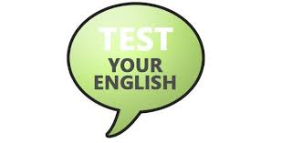

fresher-student
Admissions
Entrance examinations
English Proficiency Test
College of Technology
Advanced School of Translators and Interpreters
Faculty of Health Sciences
College of Technology
Advanced School of Translators and Interpreters
Faculty of Health Sciences
Faculty of Engineering and Technology

Requirements